Ajiaco - Plato Típico Colombiano
Ingredientes
- Verduras:
- Papa pastusa (500g) 🥔 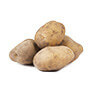
- Papa sabanera (500g) 🥔 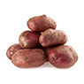
- Papas criollas (800g) 🥔 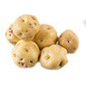
- Mazorcas 🌽(2) 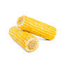
- Tallos de cebolla larga 🥬(2) 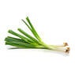
- Dientes de ajo 🧄(2) 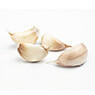
- Ramo de guascas 🥬 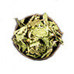
- Cilantro (20g) 🥬 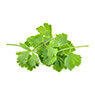
- Alcaparras (100g) 🥬
- Aguacates 🥬(2) 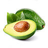
- Proteina:
- Pechugas de pollo (800g) 🍗 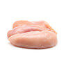
- Especias y otros:
- Taza de crema de leche 🥛 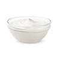
- Aceite de girasol (40ml) 🌻 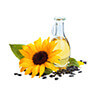
- Sal y pimienta 🧂 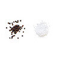